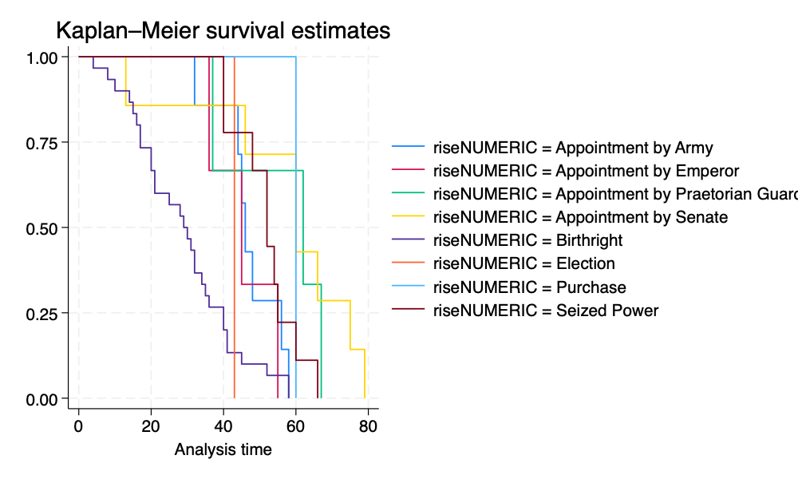
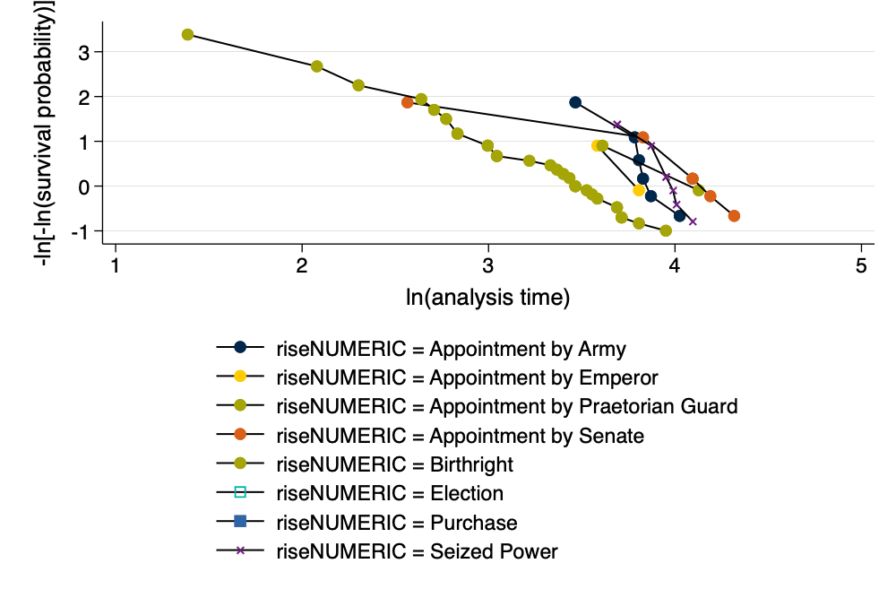

clearallimport delimited "https://raw.githubusercontent.com/agrogan1/newstuff/master/categorical/survival-analysis-and-event-history/emperors/emperors.csv"listin 3 // list out an observationgenerate birthyear = real(substr(birth, 1, 4)) // convert first 4 characters to real numbergenerate reignyear = real(substr(reign_start, 1, 4)) // convert first 4 characters to real numbergenerate agereign = reignyear - birthyeardropif agereign <0 // drop negative ages at rise to powerhistogram agereignencode rise, generate(riseNUMERIC) // numeric version of rise to powersave emperors2.dta, replace
(encoding automatically selected: ISO-8859-1)
(16 vars, 68 obs)
+-------------------------------------------------------------------------+
3. | index | name | name_full | birth |
| 3 | Caligula | GAIVS IVLIVS CAESAR AVGVSTVS GERMANICVS | 0012-08-31 |
|------------------------------------------------------------+------------|
| death | birth_~y | birth_~v | rise | reign_st~t | reign_end |
| 0041-01-24 | Antitum | Italia | Birthright | 0037-03-18 | 0041-01-24 |
|-------------------------------------------------------------------------|
| cause | killer | dynasty | era |
| Assassination | Senate | Julio-Claudian | Principate |
|-------------------------------------------------------------------------|
| notes |
| assassination may have only involved the Praetorian Guard |
|-------------------------------------------------------------------------|
| verif_who |
| Reddit user zonination |
+-------------------------------------------------------------------------+
(5 missing values generated)
(5 missing values generated)
(2 observations deleted)
(bin=7, start=4, width=10.714286)
file emperors2.dta saved
3 Cox Proportional Hazards Model
3.1stset the Data
We need to stset the data so that Stata knows that this is survival data with special characteristics relevant to survival analysis. For those of you have used other commands that attach special characteristics to the data, this is similar to using svyset for complex survey data, xtset for panel data, or even to the mi suite of commands for multiple imputation.
The most commonly used syntax is something like stset timevar, failure(failvar) id(id)1
There are many ways to specify failvar, we outline the most straightforward. Consult Stata help for your exact situation.
3.2 Formula for the Hazard
\(h(t)\) the rate of occurrence.
\[
h(t) = \lim_{\delta\to\infty} \frac{\text{probability of having an event before time } t + \delta}{\delta}
\]
We don’t directly estimate the hazard, but estimate the effect of covariates on the hazard.
3.3 Estimate the Cox Proportional Hazards Model
use emperors2.dta, clearstset agereign // stset the datastsgraph, by(riseNUMERIC) // survival curve by cause of deathgraphexport survival.png, width(1000) replacestcox ib5.riseNUMERIC // Cox model
Survival-time data settings
Failure event: (assumed to fail at time=agereign)
Observed time interval: (0, agereign]
Exit on or before: failure
--------------------------------------------------------------------------
66 total observations
5 event time missing (agereign>=.) PROBABLE ERROR
--------------------------------------------------------------------------
61 observations remaining, representing
61 failures in single-record/single-failure data
2,470 total analysis time at risk and under observation
At risk from t = 0
Earliest observed entry t = 0
Last observed exit t = 79
Failure _d: 1 (meaning all fail)
Analysis time _t: agereign
file
/Users/agrogan/Desktop/GitHub/newstuff/categorical/survival-analysis-and-event-hi
> story/emperors2/survival.png saved as PNG format
Failure _d: 1 (meaning all fail)
Analysis time _t: agereign
Iteration 0: Log likelihood = -194.68581
Iteration 1: Log likelihood = -178.34744
Iteration 2: Log likelihood = -177.31187
Iteration 3: Log likelihood = -177.29895
Iteration 4: Log likelihood = -177.29895
Refining estimates:
Iteration 0: Log likelihood = -177.29895
Cox regression with Breslow method for ties
No. of subjects = 61 Number of obs = 61
No. of failures = 61
Time at risk = 2,470
LR chi2(7) = 34.77
Log likelihood = -177.29895 Prob > chi2 = 0.0000
--------------------------------------------------------------------------------------
_t | Haz. ratio Std. err. z P>|z| [95% conf. interval]
---------------------+----------------------------------------------------------------
riseNUMERIC |
Appointment by Army | .3840617 .1639473 -2.24 0.025 .1663574 .8866653
Appointment by Em.. | .4437168 .2711353 -1.33 0.184 .1339599 1.469727
Appointment by Pr.. | .1063576 .0739064 -3.22 0.001 .0272446 .4151993
Appointment by Se.. | .0745311 .0434844 -4.45 0.000 .0237527 .2338635
Election | .6231605 .6379254 -0.46 0.644 .0837974 4.634144
Purchase | .1205918 .1271354 -2.01 0.045 .0152731 .9521544
Seized Power | .2240689 .0940928 -3.56 0.000 .0983872 .5102992
--------------------------------------------------------------------------------------

Survival Plot
3.4 Proportional Hazards Assumption
use emperors2.dta, clearstset agereign // stset the dataquietly: stcox ib5.riseNUMERIC // Cox modelestat phtest, detail// formal test of PH assumptionstphplot, by(riseNUMERIC) scheme(michigan) // graphical test of PH assumptiongraphexport ph.png, width(1000) replace
Survival-time data settings
Failure event: (assumed to fail at time=agereign)
Observed time interval: (0, agereign]
Exit on or before: failure
--------------------------------------------------------------------------
66 total observations
5 event time missing (agereign>=.) PROBABLE ERROR
--------------------------------------------------------------------------
61 observations remaining, representing
61 failures in single-record/single-failure data
2,470 total analysis time at risk and under observation
At risk from t = 0
Earliest observed entry t = 0
Last observed exit t = 79
Test of proportional-hazards assumption
Time function: Analysis time
--------------------------------------------------------
| rho chi2 df Prob>chi2
-------------+------------------------------------------
1.riseNUME~C | 0.22588 2.76 1 0.0969
2.riseNUME~C | 0.15586 1.37 1 0.2414
3.riseNUME~C | 0.03204 0.05 1 0.8209
4.riseNUME~C | -0.04249 0.11 1 0.7352
5b.riseNUM~C | . . 1 .
6.riseNUME~C | 0.11688 0.78 1 0.3765
7.riseNUME~C | 0.09609 0.47 1 0.4944
8.riseNUME~C | 0.16179 1.47 1 0.2251
-------------+------------------------------------------
Global test | 5.91 7 0.5504
--------------------------------------------------------
Failure _d: 1 (meaning all fail)
Analysis time _t: agereign
file
/Users/agrogan/Desktop/GitHub/newstuff/categorical/survival-analysis-and-event-hi
> story/emperors2/ph.png saved as PNG format

Graphical Assessment of Proportional Hazards Assumptions
3.5 Correcting For Violations of the Proportional Hazards Assumption
Had the proportional hazards assumption been violated, we could correct for this violation in one of two ways:
Estimating an interaction of the time variable (in this case age) with the variable violating the assumption.
e.g. stcox age#ib5.riseNUMERIC.
Note: In this relatively small sample this command fails to converge, perhaps because of sample size; or perhaps because there is no underlying violation of the proportional hazards assumption.
Using the , strata(varname) option to stratify on the variable violating the assumption.
Note that the command below provides results, but does not provide parameter estimates for the variable on which we are stratifying, riseNUMERIC.
stcox, strata(riseNUMERIC)
4 References
Johnson, L. L., & Shih, J. H. (2007). CHAPTER 20 - An Introduction to Survival Analysis (J. I. Gallin & F. P. Ognibene, eds.). https://doi.org/https://doi.org/10.1016/B978-012369440-9/50024-4